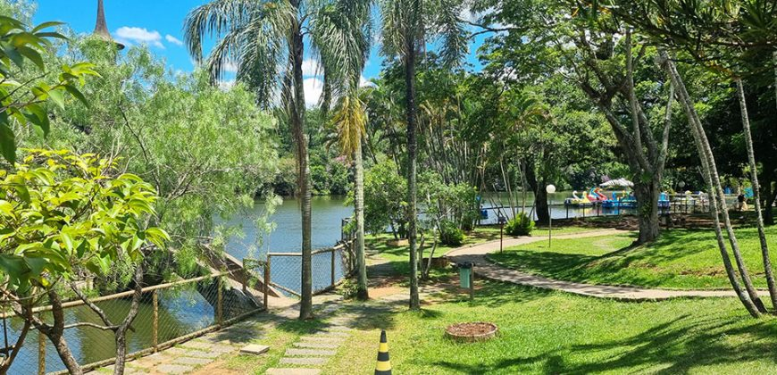
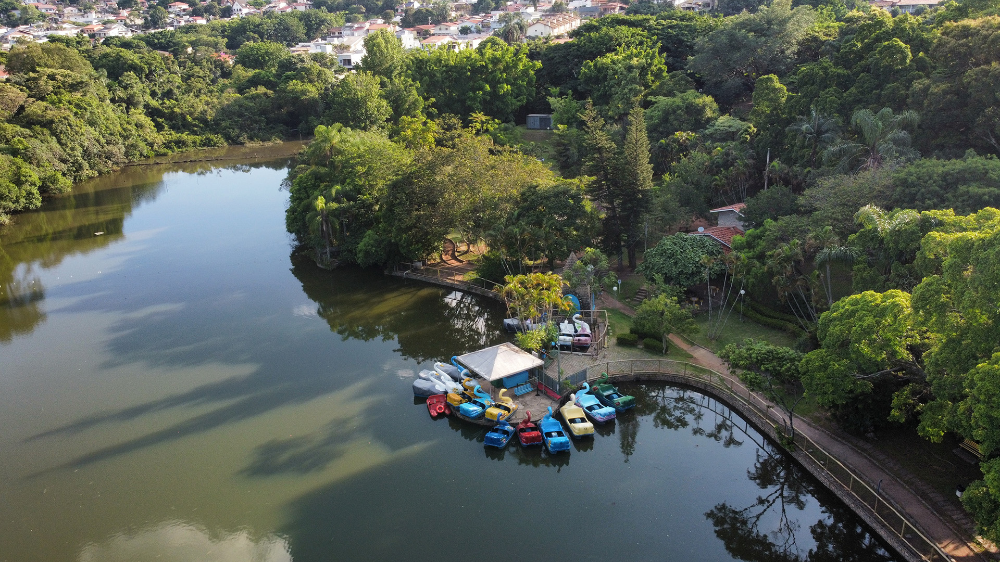

Mais Fotos




Sobre a Viagem
Localizado a Nordeste da cidade, o Parque Municipal Edmundo Zanoni tem mais de 38 mil m² de área e conta
com um grande lago e área verde com muitas árvores, algumas centenárias, com caminhos que podem ser
percorridos por calçadas adornadas com jardins floridos.
Dentro da área do parque estão outras atrações na lista do que fazer em Atibaia, incluindo o Museu de
História Natural, o Salão do Artesão, a estrutura que recebe a Festa do Morango e das Flores, além de
pedalinhos e parquinhos.